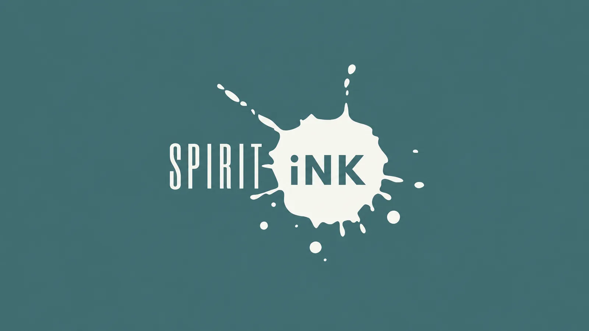

Caso studio · 2026Case study · 2026
Spirit Ink
Spirit Ink crea negozi online di abbigliamento personalizzato per scuole e associazioni di genitori nel Regno Unito, e ogni vendita raccoglie fondi per la scuola. Ho costruito l’automazione che prende un ordine pagato, prepara i file di stampa, lo invia al fornitore giusto e riporta il tracking su Shopify.
Spirit Ink builds custom clothing shops for schools and parent associations in the UK, and every sale raises money for the school. I built the automation that takes a paid order, prepares the print files, sends it to the right supplier and brings the tracking back into Shopify.

Ogni scuola in più voleva dire più lavoro a manoEvery new school meant more work by hand
Senza automazione bisognava creare la grafica, raccogliere i file, configurare i prodotti, preparare i file di stampa, scegliere le varianti giuste del fornitore, inviare gli ordini e aggiornare Shopify a ogni spedizione. Il carico cresceva con ogni scuola e con ogni nuova opzione di prodotto.
Without automation, someone had to create the artwork, collect the files, set up the products, prepare the print files, pick the right supplier variants, send the orders and update Shopify for every shipment. The workload grew with every school and every new product option.
L’obiettivo era automatizzare il più possibile, ma fermare il flusso ogni volta che mancava un dato importante del fornitore o un’informazione non era abbastanza certa.
The goal was to automate as much as possible, but to stop the flow whenever important supplier data was missing or the information wasn’t certain enough.
Io mi sono occupato dei collegamenti e dei controlliI was responsible for the connections and the checks
Ho deciso come i servizi dovevano comunicare e dove doveva stare ogni tipo di dato, e ho seguito tutte le integrazioni, comprese quelle con le API dei due fornitori di stampa.
I decided how the services should talk to each other and where each kind of data should live, and I owned all the integrations, including the two print suppliers’ APIs.
Nei punti più delicati ho aggiunto controlli contro gli ordini duplicati, i prodotti mandati al fornitore sbagliato e le pubblicazioni visibili ai clienti prima dell’approvazione. Alla fine ho scritto un handoff che permette a un’altra persona di capire il sistema live senza ripercorrere vecchi test e note di debug.
At the riskiest points I added checks against duplicate orders, products routed to the wrong supplier and pages going live before anyone approved them. At the end I wrote a handoff that lets someone else understand the live system without digging through old tests and debugging notes.
Un identificativo apparentemente plausibile può comunque puntare al prodotto sbagliato.
An identifier that looks plausible can still point to the wrong product.
Il percorso di un ordine pagatoThe route of a paid order
-
ProdottoProduct
Il design diventa un prodotto Shopify, collegato al codice esatto del fornitore.
The design becomes a Shopify product, linked to the supplier’s exact code.
-
OrdineOrder
Quando il cliente paga, le righe dell’ordine entrano nel flusso operativo.
Once the customer pays, the order lines enter the operational flow.
-
StampaPrint
Si prepara il pacchetto di produzione: artwork, posizione e dimensioni di stampa.
The production package is built: artwork, print position and size.
-
InvioDispatch
Ogni riga parte verso il fornitore giusto, solo dopo che i controlli sono passati.
Each line goes to the right supplier, and only after the checks have passed.
-
Tracking
Il tracking del fornitore torna su Shopify e l’ordine risulta evaso.
The supplier’s tracking comes back to Shopify and the order is marked as fulfilled.
Le scuole hanno anche un flusso tutto loro: scelgono i prodotti, salvano la gamma come bozza e la mandano in revisione dal proprio account. Ogni scuola può dare ai prodotti nomi e descrizioni propri senza toccare il prodotto Shopify che condivide con le altre.
Schools also get a flow of their own. They pick products, save the range as a draft and send it for review from their account, and each school can give products its own names and descriptions without touching the Shopify product it shares with the others.


Il progetto in numeriThe project in numbers
- famiglie di prodottoproduct families
- 9
- stampabili su fronte, retro o entrambiprintable front, back or both
- 7
- fornitori di stampa collegatiprint suppliers connected
- 2
Il percorso del fornitore principale ha già portato un ordine reale e pagato dal checkout Shopify alla consegna, con tracking ed evasione. Il secondo fornitore è attivo per i prodotti con codici verificati.
The main supplier’s route has already taken a real, paid order from Shopify checkout to delivery, with tracking and fulfilment. The second supplier is live for products with verified codes.
Tre decisioni, e cosa sono costateThree decisions, and what they cost
-
I codici dei fornitori non si indovinanoSupplier codes are never guessed
Gli SKU interni sono leggibili e i codici dei fornitori spesso si somigliano, quindi la tentazione di dedurre un valore mancante c’è. Il sistema usa solo identificativi confermati dal fornitore: se ne manca uno, la riga d’ordine resta ferma e il blocco registra cosa serve.
Internal SKUs are readable and supplier codes often look alike, so it’s tempting to infer a missing value. The system only uses identifiers the supplier has confirmed. If one is missing, the order line stays on hold and the hold records what’s needed.
CompromessoTrade-off un’opzione senza codice confermato non si vende finché qualcuno non la verifica.an option without a confirmed code can’t be sold until someone verifies it.
-
Fasi separate invece di un unico workflowSeparate stages instead of one long workflow
Ogni fase va storta in un modo diverso. Se la richiesta arriva al fornitore ma la risposta non torna, l’ordine potrebbe esistere già, quindi quel caso passa da una revisione manuale prima di qualsiasi nuovo tentativo. Un secondo invio potrebbe creare un doppione e far pagare il cliente due volte.
Each stage goes wrong in its own way. If a request reaches the supplier but the response never comes back, the order may already exist, so that case goes to manual review before any retry. Sending it again could create a duplicate and charge the customer twice.
CompromessoTrade-off più workflow da mantenere, e lo stato deve sopravvivere tra uno e l’altro.more workflows to maintain, and state has to persist between them.
-
Una persona approva prima della pubblicazioneA person approves before anything is published
L’automazione prepara prodotti e store scolastici fino alla revisione. La pagina di revisione mostra l’artwork renderizzato e la presentazione lato cliente, così chi approva vede quello che vedranno i clienti.
The automation prepares products and school stores up to the review stage. The review page shows the rendered artwork and the customer-facing layout, so the approver sees what customers will see.
CompromessoTrade-off nel processo resta un breve passaggio manuale.the process keeps one short manual step.
La causa stava quasi sempre al confine tra due sistemiThe cause was usually at the boundary between two systems
Le anteprime sparivano solo passando da ShopifyPreviews vanished only when the request went through Shopify
- SintomoSymptom
- Nella revisione degli School Store le immagini dei prodotti scomparivano, mentre la stessa immagine richiamata direttamente si vedeva.In the School Store review flow, product images disappeared, while the same image loaded fine when requested directly.
- CausaCause
- Shopify aggiungeva alla richiesta parametri di trasporto che l’endpoint delle immagini rifiutava.Shopify added transport parameters to the request, and the image endpoint rejected them.
- SoluzioneFix
- Il proxy ora valida la richiesta in ingresso e inoltra solo i parametri necessari, con gli stessi controlli di prima.The proxy now validates the incoming request and forwards only the parameters it needs, with the same checks as before.
Il secondo passaggio leggeva una versione vecchia del recordThe second step was reading an old copy of the record
- SintomoSymptom
- Un record doveva passare dal mockup alla creazione del prodotto. La prima fase finiva e il database mostrava lo stato nuovo, ma la seconda non partiva.A record had to move from mockup to store product. The first stage finished and the database showed the new state, but the second stage never started.
- CausaCause
- Filtro e scrittura erano corretti. Il router di Make valutava entrambe le route sulla versione del record letta all’inizio dell’esecuzione.The filter and the write were both correct. Make’s router evaluated both routes against the version of the record read at the start of the run.
- SoluzioneFix
- Ho diviso le due fasi in esecuzioni diverse, usando come confine il passaggio di approvazione che esisteva già.I split the two stages into separate runs, using the existing approval step as the boundary.